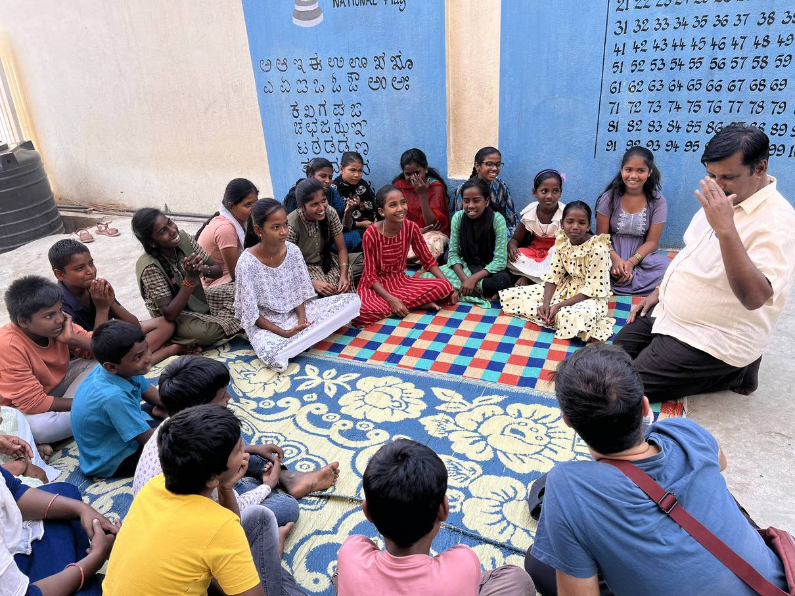
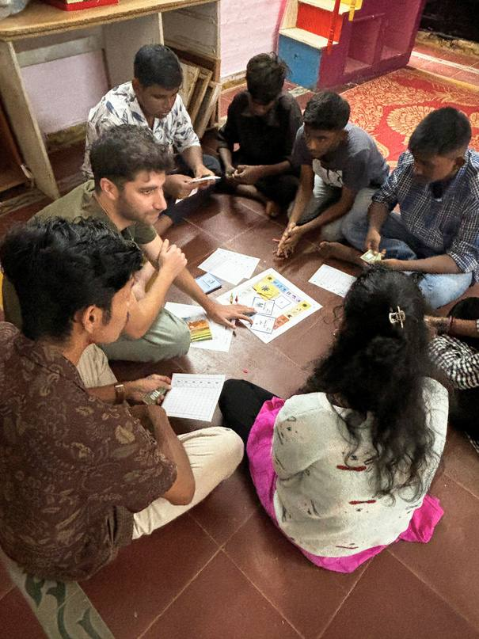

What young people were up against
Bengaluru's neighbourhoods face growing threats from floods, heat stress and drought. Many young people in these communities lack the knowledge and tools to prepare for or respond to them, and textbook climate education rarely connects with their lives, especially in government schools.
What the grant made possible
Contextual board games turned climate risk into play. Young people learned how climate change links to the problems in their own streets, teachers were trained to run the games in class, and community organisations began using them in their own work.
Learning through something familiar
At an early session, a Class 9 student from one of the city's vulnerable communities sat down with friends to play Climate Crusader. It looked like Ludo, but every move connected climate risks to the challenges of her own neighbourhood. For the first time, climate education felt like part of her everyday life.
That was the aim: young people who learn through play go on to teach others. A teacher training workshop at the partner NGO means teachers now run the games and are bringing them into the curriculum.
From classrooms to communities
The games travelled beyond schools. At a community meeting of Jan Sahas in Bengaluru, 28 community representatives played them. The organisers said the activity-based format would help them start climate conversations across their areas, with young people and in schools, and asked for a Kannada version to reach more people.
“Now I can teach someone else to play this game, and they can learn and, in turn, teach someone else. We can save our nature and ourselves.”A young participant